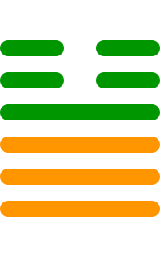

第三十四卦
大壮卦

卦辞
利贞。
大壮卦象征大壮、强壮与有力。卦辞意为：利于坚守正道。大壮卦教导我们要有强大的力量，但要坚守正道，不可滥用力量。
彖传
大壮，大者壮也。刚以动，故壮。大壮利贞，大者正也。正大而天地之情可见矣。
彖传说：大壮，是大者壮。刚以动，所以壮。大壮利贞，是大者正。正大而天地之情可见矣。
象传
雷在天上，大壮。君子以非礼弗履。
象传说：雷在天上，就是大壮卦。君子应当效法这种精神，不合礼的不履行。雷在天上象征强大力量，要按礼法行事。
爻辞
初九：壮于趾，征凶，有孚
壮于脚趾，征伐凶险，有诚信。
初九爻位于最下方，刚强于下。强壮在脚趾，征伐凶险，但有诚信，表示力量有限。
九二：贞吉
坚守正道吉祥。
九二爻得中得正，守正吉祥。坚守正道吉祥，表示以正道用强。
九三：小人用壮，君子用罔，贞厉。羝羊触藩，羸其角
小人用壮，君子用网，坚守正道危险。公羊触藩，羸其角。
九三爻阳刚得位，用壮有度。小人用强壮，君子用网，坚守正道危险。公羊触藩篱，伤了角，表示用壮不当。
九四：贞吉，悔亡。藩决不羸，壮于大舆之輹
坚守正道吉祥，悔恨消亡。藩决不羸，壮于大舆之輹。
九四爻接近君位，突破阻碍。坚守正道吉祥，悔恨消亡。藩篱决开不受伤，强壮如大车的輹，表示突破成功。
六五：丧羊于易，无悔
丧羊于易，没有悔恨。
六五爻居中尊位，失去强壮。在易地失去羊，没有悔恨，表示柔能制刚。
上六：羝羊触藩，不能退，不能遂，无攸利，艰则吉
公羊触藩，不能退，不能遂，无所利，艰难则吉祥。
上六爻位于极点，进退两难。公羊触藩篱，不能退不能进，无所利，但在艰难中吉祥。